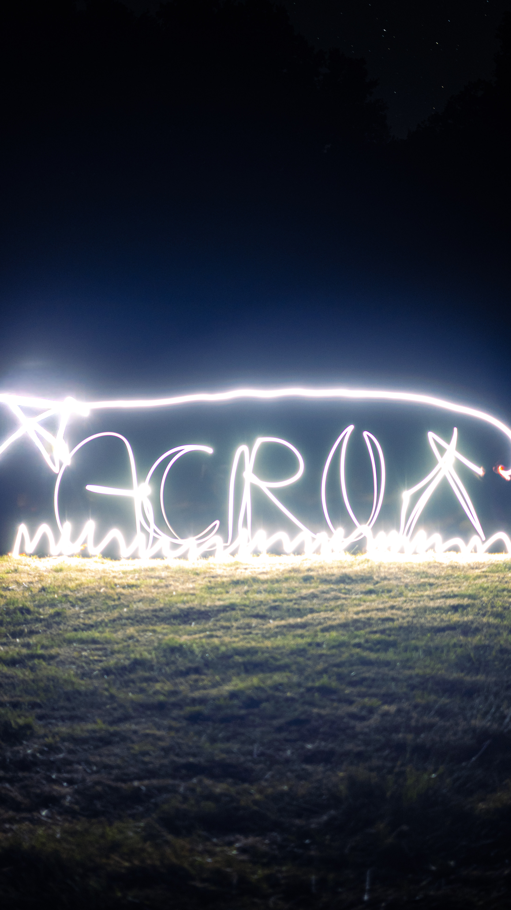
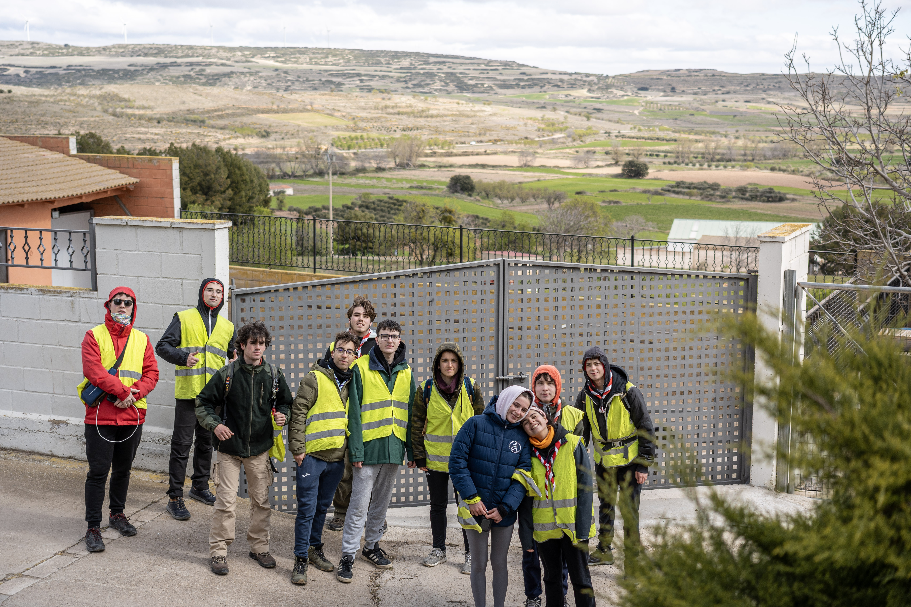
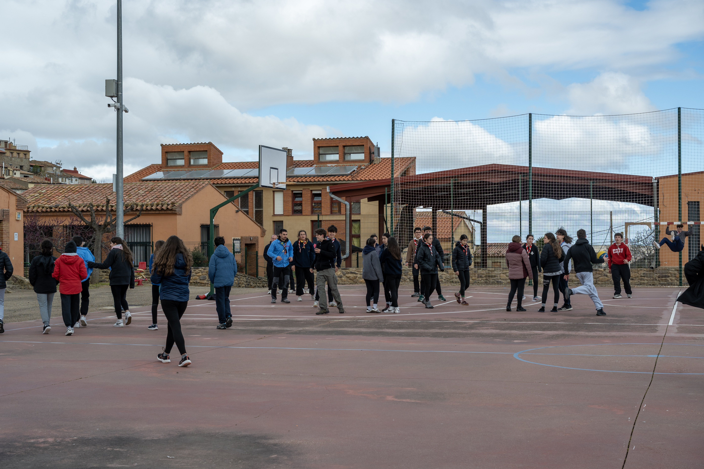

Descubre cómo vivimos nuestras acampadas, prepara tu equipo paso a paso con el simulador interactivo de mochila y practica claves y cabuyería.

El campamento es el momento cumbre de la educación scout. Salimos de Valladolid para convivir en plena naturaleza: desde las acampadas de fin de semana, Navidad y Semana Santa hasta el Campamento de Verano de 15 días en julio.
En la segunda quincena de julio montamos nuestro campamento en entornos naturales de montaña con tiendas, construcciones de madera, cocina propia, río y veladas.
Salidas de fin de semana y rutas por etapas adaptadas a la edad de cada sección (Castores, Manada, Tropa, Escultas y Clan).


Selecciona el tipo de salida y ve marcando cada objeto para comprobar si llevas todo el equipo imprescindible bien distribuido:
Pulsa en los elementos de la lista para empacarlos.
Pon a prueba tus conocimientos antes del próximo juego nocturno o taller de construcciones pioneras:
Escribe cualquier palabra para traducirla a Código Morse y Clave Murciélago y escúchala con sonido de silbato:
En campamento levantamos mesas, portadas y mochileros usando solo troncos y cuerda de pita. Pulsa cada nudo:
Sirve para unir dos cabos del mismo grosor que no vayan a soportar gran tensión. Es el nudo más simbólico del escultismo: representa la unión mundial de los scouts.